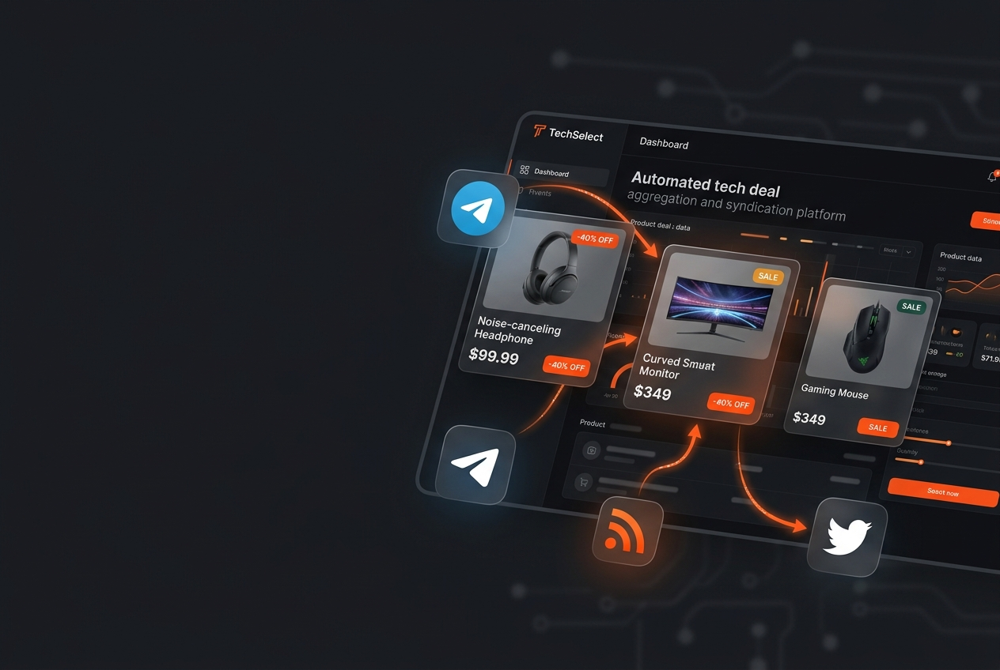
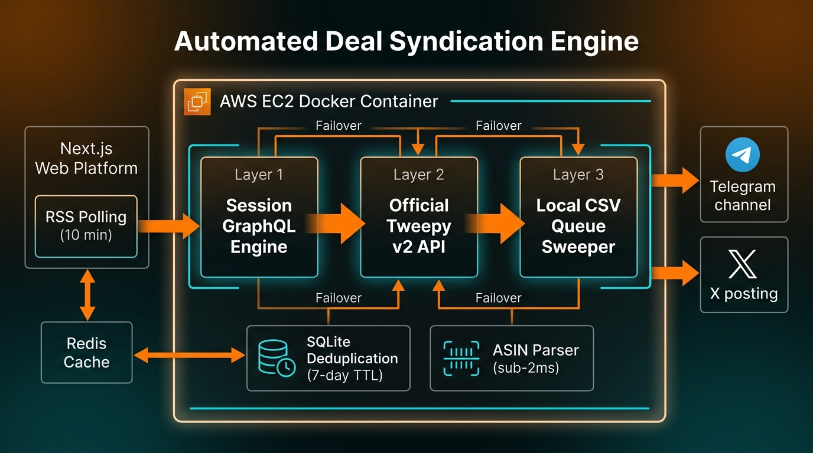

TechSelect
Automated multi-platform deal aggregation and syndication engine — live on AWS EC2

Project Overview
TechSelect collects product offers, resolves and deduplicates product ASINs, and distributes deal content automatically across Telegram, X (Twitter), RSS 2.0, and the web — all running live on AWS EC2 in Docker.
The platform combines a Python automation engine with a Next.js 15 web platform, Upstash Redis caching, SQLite deduplication, and a three-tier resilient failover publishing system. It has processed more than 1,200 product ASINs with 99.9% uptime.
System Architecture
The engine uses a three-tier failover: Session GraphQL Engine → Official Tweepy v2 API → Local CSV Queue Sweeper, ensuring zero dropped broadcasts during rate limits or network issues.

Architecture and Features
- Three-tier publishing failover with Session GraphQL Engine → Official Tweepy v2 API → Local CSV Queue Sweeper, ensuring zero dropped broadcasts.
- Zero-cost headless GraphQL posting using session token authentication, saving $2,400/year in Twitter API subscription costs.
- Regex ASIN resolution and link sanitization optimized to sub-2ms latency.
- Automated 10-minute RSS 2.0 polling with a 7-day TTL SQLite deduplication store.
- Next.js 15 web platform with Upstash Redis caching, dynamic
/feed.xmlRSS feed, and/api/dealswebhook endpoint. - Deployed on AWS EC2 via Docker with 99.9% uptime and 1,200+ ASINs processed.
Technology Stack
Python, Telethon (MTProto), Next.js 15, TypeScript, Upstash Redis, SQLite, Docker, AWS EC2, GraphQL, Webhooks, and Linux.